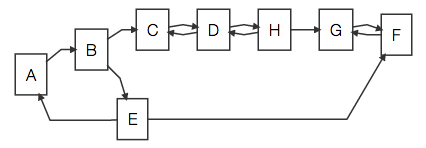
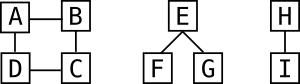

Graphlib v0.4.0
Graphlib is a JavaScript library that provides data structures for undirected and directed multi-graphs along with algorithms that can be used with them.
This documentation describes the Graphlib API. Please visit our GitHub repository for more general information.
Graph
The Graph class represents an undirected multigraph.
Subsequent examples in this section assume that Graph has been required
as follows:
var Graph = require("graphlib").Graph;
var graph = new Graph();new Graph()
Constructs a new empty Graph.
graph.order()
Returns the number of nodes in the graph. For example:
graph.order();
// => 0
graph.addNode(1);
graph.addNode(2);
graph.order();
// => 2graph.size()
Returns the number of edges in the graph. For example:
graph.size();
// => 0
graph.addNode(1);
graph.addNode(2);
graph.addEdge(null, 1, 2);
graph.size();
// => 1graph.isDirected()
Always returns false for Graph because it creates undirected graphs.
graph.graph([value])
The graph function provides a mechansim to get and set some user-defined
information on the graph object itself. With no arguments graph returns
the currently set value. With one argument graph replaces the current
value on the graph with value. The initial value for the graph is
undefined.
graph.graph();
// => undefined
graph.graph("Some graph value");
graph.graph();
// => "Some graph value"graph.hasNode(u)
Returns true if the node with the id u is a member of the graph and
false if not.
graph.hasNode(1);
// => false
graph.addNode(1);
graph.hasNode(1);
// => truegraph.node(u, [value])
The node function provides a mechanism to get and set some user-defined
information on an individual node. With one argument this function returns
the value currently assigned to the node with the id u. With two
arguments this function replaces the current value of the node u with
value. The initial value for nodes is undefined.
If there is no node u in the graph this function will throw an Error.
graph.addNode(1);
graph.node(1);
// => undefined
graph.node(1, "Some node value");
graph.node(1);
// => "Some node value"
graph.node(2);
// throws an Errorgraph.nodes()
Returns the ids of all nodes in this graph. Use
graph.node(u) to get the value for a specific node.
graph.nodes();
// => []
graph.addNode(1);
graph.addNode(2);
graph.nodes()
// => [1, 2]graph.eachNode(f)
Applies the function f(u, value) to each node in the graph in arbitrary
order, where u is the id of the node and value is its currently
assigned value.
graph.addNode(1, "label-1");
graph.addNode(2, "label-2");
var results = {};
graph.eachNode(function(u, value) {
results[u] = value;
});
results
// => { "1": "label-1", "2": "label-2" }graph.neighbors(u)
Returns the ids of all nodes that are adjacent to the node with the id u.
If u is not a member of the graph this function throws an Error.
graph.addNode(1);
graph.addNode(2);
graph.addEdge(null, 1, 2);
graph.neighbors(1);
// => [2]
graph.neighbors(2);
// => [1]graph.hasEdge(e)
Returns true if an edge with the id e exists in the graph or false if
not.
graph.hasEdge("A");
// => false
graph.addNode(1);
graph.addNode(2);
graph.addEdge("A", 1, 2);
graph.hasEdge("A");
// => truegraph.edge(e, [value])
The edge function provides a mechanism to get and set some user-defined
information on an individual edge. With one argument this function returns
the value currently assigned to the edge with the id e. With two
arguments this function replaces the current value of the edge e with
value. The initial value for edges is undefined.
If there is no edge e in the graph this function will throw an Error.
graph.addNode(1);
graph.addNode(2);
graph.edge("A", 1, 2);
// => undefined
graph.edge("A", "Some edge value");
graph.edge("A");
// => "Some edge value"
graph.edge("B");
// throws an Errorgraph.edges()
Returns the ids of all edges in this graph. Use
graph.edge(e) to get the value for a specific edge.
graph.addNode(1);
graph.addNode(2);
graph.addEdge("A", 1, 2);
graph.addEdge("B", 1, 2);
graph.edges();
// => ["A", "B"]graph.eachEdge(f)
Applies the function f(e, u, v, value) to each edge in the graph in
arbitrary order, where e is the edge's id, u and v are the incident
node ids, and value it the value assigned to the edge. Note that the
order of u and v is not significant since this is an undirected graph.
graph.addNode(1);
graph.addNode(2);
graph.addEdge("A", 1, 2, "A-label");
graph.addEdge("B", 2, 1, "B-label");
var results = {};
graph.eachEdge(function(e, u, v, label) {
results[e] = "U: " + u + " V: " + v + " L: " + label;
});
results
// => { "A": "U: 1 V: 2 L: A-label",
// "B": "U: 2 V: 1 L: B-label" }graph.incidentNodes(e)
Returns the nodes that are a part of the edge e in a 2-element array.
There is no significance to the order in which the nodes appear in the
array.
graph.addNode(1);
graph.addNode(2);
graph.addEdge("A", 1, 2);
graph.incidentNodes("A");
// => [ 1, 2 ]graph.incidentEdges(u, [v])
Returns an arrray of ids for all edges in the graph that are incident on
the node u. If the node u is not in the graph this function raises
an Error.
Optionally the id of another node, v, may be be specified. This causes
the results to be filtered such that only edges between u and v are
included in the returned array. If the node v is specified but not a
member of the graph this function raises an Error.
graph.addNode(1);
graph.addNode(2);
graph.addNode(3);
graph.addEdge("A", 1, 2);
graph.addEdge("B", 2, 3);
graph.addEdge("C", 3, 1);
graph.addEdge("D", 3, 2);
graph.incidentEdges(3);
// => [ "B", "C", "D" ]
graph.inEdges(3, 2);
// => [ "B", "D" ]graph.equals(other)
Returns true if other has the same set of nodes and edges, and the
values of those nodes and edges are equal (===). Returns false
otherwise.
graph.toString()
Returns a String representation of this graph for debugging purposes. The
format of this string is arbitrary and subject to change at any time.
graph.addNode(u, [value])
Adds a new node with the id u to the graph. The node u is assigned the
value of value if it is specified. Otherwise it defaults to the value
undefined. If a node with the id u is already a member of the graph
this function throws an Error.
graph.delNode(u)
Removes a node from the graph that has the id u. Any edges incident on
the node u are also removed. If the graph does not contain a node u
then this function will raise an Error.
graph.addEdge([e], u, v, [value])
Adds a new edge to the graph with the id e between a node with the id u
and a node with the id v. The edge e is assigned the value of value
if it is specified. Otherwise it defaults to the value undefined. If e
is null the graph will assign an arbitrary id to the edge. This function
will throw an Error if u or v are not members of this graph or if e
is already a member of this graph.
graph.delEdge(e)
Removes an edge in the graph with the id e. If no edge in the graph has
the id u this function will thrown an Error.
graph.copy()
Creates a new graph that contains all of the nodes and edges from this graph.
graph.filterNodes(f)
Applies the function f(u, value) to each node in this graph and returns a
new graph that only includes those nodes for which f returns true.
Edges that have both incident nodes in the new graph are also copied to the
new graph.
function filter(u) { return u === 1 || u === 2; }
graph.addNode(1, "node-1");
graph.addNode(2, "node-2");
graph.addNode(3, "node-3");
graph.addEdge(null, 1, 2, "edge-1-2");
graph.addEdge(null, 2, 3, "edge-2-3");
var subgraph = graph.filterNodes(filter);
subgraph.nodes();
// => [1, 2]
subgraph.node(1);
// => "node-1"
subgraph.neighbors(2);
// => [1]graph.toDigraph()
Returns a new directed graph using the nodes and edge from this graph. The new graph will have the same nodes, but will have twice the number of edges: each edge is split into edges pointing in opposite directions. Edge ids, consequently, are not preserved by this transformation.
graph.addNode(1);
graph.addNode(2);
graph.addNode(3);
graph.addEdge(null, 1, 2);
graph.addEdge(null, 2, 3);
graph.size();
// => 3
var digraph = graph.toDigraph();
digraph instanceof Digraph;
// => true
digraph.nodes();
// => [ 1, 2, 3 ]
digraph.size();
// => 6 /* twice the number of edges */
digraph.successors(2);
// => [ 1, 3 ]
digraph.edges();
// => [ "_ANON-1", "_ANON-2", "_ANON-3", "_ANON-4" ]Digraph
The Digraph class represents a directed multigraph.
Subsequent examples in this section assume that Digraph has been required
as follows:
var Digraph = require("graphlib").Digraph;
var digraph = new Digraph();new Digraph()
Constructs a new empty Digraph.
digraph.order()
Returns the number of nodes in the digraph. For example:
digraph.order();
// => 0
digraph.addNode(1);
digraph.addNode(2);
digraph.order();
// => 2digraph.size()
Returns the number of edges in the digraph. For example:
digraph.size();
// => 0
digraph.addNode(1);
digraph.addNode(2);
digraph.addEdge(null, 1, 2);
digraph.size();
// => 1digraph.isDirected()
Always returns true for Digraph because it creates directed graphs.
digraph.graph([value])
The graph function provides a mechansim to get and set some user-defined
information on the graph object itself. With no arguments graph returns
the currently set value. With one argument graph replaces the current
value on the graph with value. The initial value for the graph is
undefined.
digraph.graph();
// => undefined
digraph.graph("Some graph value");
digraph.graph();
// => "Some graph value"digraph.hasNode(u)
Returns true if the node with the id u is a member of the graph and
false if not.
digraph.hasNode(1);
// => false
digraph.addNode(1);
digraph.hasNode(1);
// => truedigraph.node(u, [value])
The node function provides a mechanism to get and set some user-defined
information on an individual node. With one argument this function returns
the value currently assigned to the node with the id u. With two
arguments this function replaces the current value of the node u with
value. The initial value for nodes is undefined.
If there is no node u in the graph this function will throw an Error.
digraph.addNode(1);
digraph.node(1);
// => undefined
digraph.node(1, "Some node value");
digraph.node(1);
// => "Some node value"
digraph.node(2);
// throws an Errordigraph.nodes()
Returns the ids of all nodes in this digraph. Use
digraph.node(u) to get the value for a specific node.
digraph.nodes();
// => []
digraph.addNode(1);
digraph.addNode(2);
digraph.nodes()
// => [1, 2]digraph.eachNode(f)
Applies the function f(u, value) to each node in the graph in arbitrary
order, where u is the id of the node and value is its currently
assigned value.
digraph.addNode(1, "label-1");
digraph.addNode(2, "label-2");
var results = {};
digraph.eachNode(function(u, value) {
results[u] = value;
});
results
// => { "1": "label-1", "2": "label-2" }digraph.successors(u)
Returns the ids of all nodes that are successors of the node with the id
u. If u is not a member of the graph this function throws an Error.
digraph.addNode(1);
digraph.addNode(2);
digraph.addEdge(null, 1, 2);
digraph.successors(1);
// => [2]
digraph.successors(2);
// => []digraph.predecessors(u)
Returns the ids of all nodes that are predecessors of the node with the id
u. If u is not a member of the graph this function throws an Error.
digraph.addNode(1);
digraph.addNode(2);
digraph.addEdge(null, 1, 2);
digraph.predecessors(1);
// => []
digraph.predecessors(2);
// => [1]digraph.neighbors(u)
Returns the ids of all nodes that are adjacent to the node with the id u.
If u is not a member of the graph this function throws an Error.
digraph.addNode(1);
digraph.addNode(2);
digraph.addEdge(null, 1, 2);
digraph.neighbors(1);
// => [2]
digraph.neighbors(2);
// => [1]digraph.sources()
Returns the ids of all nodes that are in the graph that are sources. A source in a directed graph is a node that has no in-edges.
digraph.addNode(1);
digraph.addNode(2);
digraph.addEdge(null, 1, 2);
digraph.sources();
// => [1]digraph.sinks()
Returns the ids of all nodes that are in the graph that are sinks. A sink in a directed graph is a node that has no in-edges.
digraph.addNode(1);
digraph.addNode(2);
digraph.addEdge(null, 1, 2);
digraph.sinks();
// => [2]digraph.hasEdge(e)
Returns true if an edge with the id e exists in the graph or false if
not.
digraph.hasEdge("A");
// => false
digraph.addNode(1);
digraph.addNode(2);
digraph.addEdge("A", 1, 2);
digraph.hasEdge("A");
// => truedigraph.edge(e, [value])
The edge function provides a mechanism to get and set some user-defined
information on an individual edge. With one argument this function returns
the value currently assigned to the edge with the id e. With two
arguments this function replaces the current value of the edge e with
value. The initial value for edges is undefined.
If there is no edge e in the graph this function will throw an Error.
digraph.addNode(1);
digraph.addNode(2);
digraph.edge("A", 1, 2);
// => undefined
digraph.edge("A", "Some edge value");
digraph.edge("A");
// => "Some edge value"
digraph.edge("B");
// throws an Errordigraph.edges()
Returns the ids of all edges in this digraph. Use
digraph.edge(e) to get the value for a specific edge.
digraph.addNode(1);
digraph.addNode(2);
digraph.addEdge("A", 1, 2);
digraph.addEdge("B", 1, 2);
digraph.edges();
// => ["A", "B"]digraph.eachEdge(f)
Applies the function f(e, source, target, value) to each edge in the
graph in arbitrary order, where e is the edge's id, source is the id of
the source node, target is the id of the target node, and value it the
value assigned to the edge.
digraph.addNode(1);
digraph.addNode(2);
digraph.addEdge("A", 1, 2, "A-label");
digraph.addEdge("B", 2, 1, "B-label");
var results = {};
digraph.eachEdge(function(e, source, target, value) {
results[e] = "S: " + source + " T: " + target + " V: " + value;
});
results
// => { "A": "S: 1 T: 2 V: A-label",
// "B": "S: 2 T: 1 V: B-label" }digraph.source(e)
Returns the source node incident on the edge with the id e. If no such
edge exists in the graph this function throws an Error.
digraph.addNode(1);
digraph.addNode(2);
digraph.addEdge("A", 1, 2);
digraph.source("A");
// => 1digraph.target(e)
Returns the target node incident on the edge with the id e. If no such
edge exists in the graph this function throws an Error.
digraph.addNode(1);
digraph.addNode(2);
digraph.addEdge("A", 1, 2);
digraph.target("A");
// => 2digraph.incidentNodes(e)
Returns the nodes that are a part of the edge e in a 2-element array.
This is equivalent to [digraph.source(e), digraph.target(e)].
digraph.addNode(1);
digraph.addNode(2);
digraph.addEdge("A", 1, 2);
digraph.incidentNodes("A");
// => [ 1, 2 ]digraph.inEdges(target, [source])
Returns an array of ids for all edges in the graph that have the node
identified by target as their target. If the node target is not in the
graph this function raises an Error.
Optionally a node identified by source can be specified. This causes the
results to be filtered such that only edges pointing from source to
target are included. If the node source is specified but is not in the
graph then this function raises an Error.
digraph.addNode(1);
digraph.addNode(2);
digraph.addNode(3);
digraph.addEdge("A", 1, 2);
digraph.addEdge("B", 2, 3);
digraph.addEdge("C", 3, 1);
digraph.addEdge("D", 3, 2);
digraph.inEdges(2);
// => [ "A", "D" ]
digraph.inEdges(2, 3);
// => [ "D" ]Note that digraph.inEdges(target, source) yields the same result as
digraph.outEdges(source, target).
digraph.outEdges(source, [target])
Returns an array of ids for all edges in the graph that have the node
identified by source as their source. If the node source is not in the
graph this function raises an Error.
Optionally a node identified by target can be specified. This causes the
results to be filtered such that only edges pointing from source to
target are included. If the node target is specified but is not in the
graph then this function raises an Error.
digraph.addNode(1);
digraph.addNode(2);
digraph.addNode(3);
digraph.addEdge("A", 1, 2);
digraph.addEdge("B", 2, 3);
digraph.addEdge("C", 3, 1);
digraph.addEdge("D", 3, 2);
digraph.outEdges(3);
// => [ "C", "D" ]
digraph.inEdges(3, 2);
// => [ "D" ]digraph.incidentEdges(u, [v])
Returns an arrray of ids for all edges in the graph that are incident on
the node u, regardless of the direction of the edge. If the node u is
not in the graph this function raises an Error.
Optionally the id of another node, v, may be be specified. This causes
the results to be filtered such that only edges between u and v are
included in the returned array. If the node v is specified but not a
member of the graph this function raises an Error.
digraph.addNode(1);
digraph.addNode(2);
digraph.addNode(3);
digraph.addEdge("A", 1, 2);
digraph.addEdge("B", 2, 3);
digraph.addEdge("C", 3, 1);
digraph.addEdge("D", 3, 2);
digraph.incidentEdges(3);
// => [ "B", "C", "D" ]
digraph.inEdges(3, 2);
// => [ "B", "D" ]digraph.equals(other)
Returns true if other has the same set of nodes and edges, and the
values of those nodes and edges are equal (===). Returns false
otherwise.
digraph.toString()
Returns a String representation of this graph for debugging purposes. The
format of this string is arbitrary and subject to change at any time.
digraph.addNode(u, [value])
Adds a new node with the id u to the digraph. The node u is assigned the
value of value if it is specified. Otherwise it defaults to the value
undefined. If a node with the id u is already a member of the graph
this function throws an Error.
digraph.delNode(u)
Removes a node from the graph that has the id u. Any edges incident on
the node u are also removed. If the graph does not contain a node u
then this function will raise an Error.
digraph.addEdge([e], u, v, [value])
Adds a new edge to the graph with the id e between a node with the id u
and a node with the id v. The edge e is assigned the value of value
if it is specified. Otherwise it defaults to the value undefined. If e
is null the graph will assign an arbitrary id to the edge. This function
will throw an Error if u or v are not members of this graph or if e
is already a member of this digraph.
digraph.delEdge(e)
Removes an edge in the graph with the id e. If no edge in the graph has
the id u this function will thrown an Error.
digraph.copy()
Creates a new graph that contains all of the nodes and edges from this graph.
digraph.filterNodes(f)
Applies the function f(u, value) to each node in this graph and returns a
new graph that only includes those nodes for which f returns true.
Edges that have both incident nodes in the new graph are also copied to the
new graph.
function filter(u) { return u === 1 || u === 2; }
digraph.addNode(1, "node-1");
digraph.addNode(2, "node-2");
digraph.addNode(3, "node-3");
digraph.addEdge(null, 1, 2, "edge-1-2");
digraph.addEdge(null, 2, 3, "edge-2-3");
var subgraph = digraph.filterNodes(filter);
subgraph.nodes();
// => [1, 2]
subgraph.node(1);
// => "node-1"
subgraph.neighbors(2);
// => [1]digraph.toGraph()
Returns a new undirected graph using the nodes and edge from this graph. The new graph will have the same nodes, but the edges will be made undirected. Edge ids are preserved in this transformation.
digraph.addNode(1);
digraph.addNode(2);
digraph.addNode(3);
digraph.addEdge("A", 1, 2);
digraph.addEdge("B", 2, 3);
var graph = digraph.toGraph();
graph instanceof Graph;
// => true
graph.nodes();
// => [ 1, 2, 3 ]
graph.neighbors(2);
// => [ 1, 3 ]
graph.edges();
// => [ "A", "B" ]alg
The alg modules includes a number of algorithms that can be used with the
graph classes included in graphlib. You can either get to all algorithms
using var alg = require("graphlib").alg or you can get a single
algorithm, e.g. topsort, using var topsort =
require("graphlib").alg.topsort.
For the purposes of this section, we assume the following requires:
var alg = require("graphlib").alg;alg.topsort(g)
An implementation of topographical sorting.
Given a Digraph g this function returns an array of nodes
such that for each edge u -> v, u appears before v in the array. If
the graph has a cycle it is impossible to generate such a list and
CycleException is thrown.
alg.topsort(digraph);
// => [ 1, 2, 3, 4 ]
// OR
// => [ 1, 3, 2, 4 ]alg.isAyclic(g)
Given a Digraph, g, this function returns true if the
graph has no cycles and returns false if it does. This algorithm returns
as soon as it detects the first cycle. You can use
alg.findCycles to get the actual list of cycles in the
graph.
var digraph = new Digraph();
digraph.addNode(1);
digraph.addNode(2);
digraph.addNode(3);
digraph.addEdge(null, 1, 2);
digraph.addEdge(null, 2, 3);
alg.isAcyclic(digraph);
// => true
digraph.addEdge(null, 3, 1);
alg.isAcyclic(digraph);
// => falsealg.findCycles(g)
Given a Digraph, g, this function returns all nodes that
are part of a cycle. As there may be more than one cycle in a graph this
function return an array of these cycles, where each cycle is itself
represented by an array of ids for each node involved in that cycle.
alg.isAcyclic is more efficient if you only need to
determine whether a graph has a cycle or not.
var digraph = new Digraph();
digraph.addNode(1);
digraph.addNode(2);
digraph.addNode(3);
digraph.addEdge(null, 1, 2);
digraph.addEdge(null, 2, 3);
alg.findCycles(digraph);
// => []
digraph.addEdge(null, 3, 1);
alg.findCycles(digraph);
// => [ [ 3, 2, 1 ] ]
digraph.addNode(4);
digraph.addNode(5);
digraph.addEdge(null, 4, 5);
digraph.addEdge(null, 5, 4);
alg.findCycles(digraph);
// => [ [ 3, 2, 1 ], [ 5, 4 ] ]alg.dijkstra(g, source, [weightFunc], [incidentFunc])
This function is an implementation of Dijkstra's algorithm which finds
the shortest path from source to all other nodes in g. This
function returns a map of u -> { distance, predecessor }. The distance
property holds the sum of the weights from source to u along the
shortest path or Number.POSITIVE_INFINITY if there is no path from
source. The predecessor property can be used to walk the individual
elements of the path from source to u in reverse order.
It takes an optional weightFunc(e) which returns the weight of the edge
e. If no weightFunc is supplied then each edge is assumed to have a
weight of 1. This function throws an Error if any of the traversed edges
have a negative edge weight.
It takes an optional incidentFunc(u) which returns the ids of all edges
incident to the node u for the purposes of shortest path traversal. By
default this function uses the g.outEdges for Digraphs and
g.incidentEdges for Graphs.
It takes O((|E| + |V|) * log |V|) time.
function weight(e) { return digraph.edge(e); }
alg.dijkstra(digraph, "A", weight);
// => { A: { distance: 0 },
// B: { distance: 6, predecessor: 'C' },
// C: { distance: 4, predecessor: 'A' },
// D: { distance: 2, predecessor: 'A' },
// E: { distance: 8, predecessor: 'F' },
// F: { distance: 4, predecessor: 'D' } }alg.dijkstraAll(g, [weightFunc], [incidentFunc])
This function finds the shortest path from each node to every other
reachable node in the graph. It is similar to
alg.dijkstra, but instead of returning a single-source
array, it returns a mapping of of source -> alg.dijksta(g, source,
weightFunc, incidentFunc).
This function takes an optional weightFunc(e) which returns the
weight of the edge e. If no weightFunc is supplied then each edge is
assumed to have a weight of 1. This function throws an Error if any of
the traversed edges have a negative edge weight.
This function takes an optional incidentFunc(u) which returns the ids of
all edges incident to the node u for the purposes of shortest path
traversal. By default this function uses the outEdges function on the
supplied graph.
This function takes O(|V| * (|E| + |V|) * log |V|) time.
function weight(e) { return digraph.edge(e); }
alg.dijkstraAll(digraph, weight);
// => { A:
// { A: { distance: 0 },
// B: { distance: 6, predecessor: 'C' },
// C: { distance: 4, predecessor: 'A' },
// D: { distance: 2, predecessor: 'A' },
// E: { distance: 8, predecessor: 'F' },
// F: { distance: 4, predecessor: 'D' } },
// B:
// { A: { distance: Infinity },
// B: { distance: 0 },
// C: { distance: Infinity },
// D: { distance: Infinity },
// E: { distance: 6, predecessor: 'B' },
// F: { distance: Infinity } },
// C: { ... },
// D: { ... },
// E: { ... },
// F: { ... } }alg.floydWarshall(g, [weightFunc], [incidentFunc])
This function is an implementation of the Floyd-Warshall algorithm,
which finds the shortest path from each node to every other reachable node
in the graph. It is similar to alg.dijkstraAll, but
it handles negative edge weights and is more efficient for some types of
graphs. This function returns a map of source -> { target -> { distance,
predecessor }. The distance property holds the sum of the weights from
source to target along the shortest path of Number.POSITIVE_INFINITY
if there is no path from source. The predecessor property can be used to
walk the individual elements of the path from source to target in
reverse order.
This function takes an optional weightFunc(e) which returns the
weight of the edge e. If no weightFunc is supplied then each edge is
assumed to have a weight of 1.
This function takes an optional incidentFunc(u) which returns the ids of
all edges incident to the node u for the purposes of shortest path
traversal. By default this function uses the outEdges function on the
supplied graph.
This algorithm takes O(|V|^3) time.
function weight(e) { return digraph.edge(e); }
alg.floydWarshall(digraph, weight);
// => { A:
// { A: { distance: 0 },
// B: { distance: 6, predecessor: 'C' },
// C: { distance: 4, predecessor: 'A' },
// D: { distance: 2, predecessor: 'A' },
// E: { distance: 8, predecessor: 'F' },
// F: { distance: 4, predecessor: 'D' } },
// B:
// { A: { distance: Infinity },
// B: { distance: 0 },
// C: { distance: Infinity },
// D: { distance: Infinity },
// E: { distance: 6, predecessor: 'B' },
// F: { distance: Infinity } },
// C: { ... },
// D: { ... },
// E: { ... },
// F: { ... } }alg.tarjan(g)
This function is an implementation of Tarjan's algorithm which finds all strongly connected components in the directed graph g. Each strongly connected component is composed of nodes that can reach all other nodes in the component via directed edges. A strongly connected component can consist of a single node if that node cannot both reach and be reached by any other specific node in the graph. Components of more than one node are guaranteed to have at least one cycle.
This function returns an array of components. Each component is itself an array that contains the ids of all nodes in the component.
alg.tarjan(digraph);
// => [ [ 'F', 'G' ],
// [ 'H', 'D', 'C' ],
// [ 'E', 'B', 'A' ] ]alg.components(g)
Finds all connected components in a graph and returns an array of these components. Each component is itself an array that contains the ids of nodes in the component.
This function only works with undirected Graphs.
alg.components(graph);
// => [ [ 'A', 'B', 'C', 'D' ],
// [ 'E', 'F', 'G' ],
// [ 'H', 'I' ] ]alg.prim(g, weightFunc)
Prim's algorithm takes a connected undirected graph and generates a minimum spanning tree. This function returns the minimum spanning tree as an undirected graph. This algorithm is derived from the description in "Introduction to Algorithms", Third Edition, Cormen, et al., Pg 634.
This function takes a weightFunc(e) which returns the weight of the edge
e. It throws an Error if the graph is not connected.
This function takes O(|E| log |V|) time.
function weight(e) { return graph.edge(e); }
alg.prim(graph, weight);Returns a tree (represented with a Graph) of the following form:
Filters
The filters in the module can be used with
graph.filterNodes and
digraph.filterNodes. These filters are available
as:
var filter = require("graphlib").filter;filter.all()
Returns all nodes in the graph. Thus subgraph is identical in the
following code blocks:
var subgraph = graph.copy();and
var subgraph = graph.filterNode(filter.all());filter.nodesFromList(list)
Returns true only for nodes with ids in list.